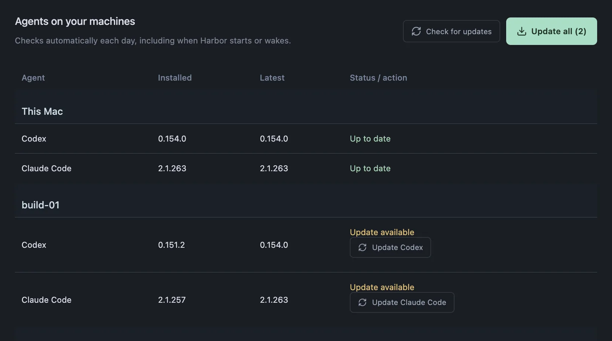
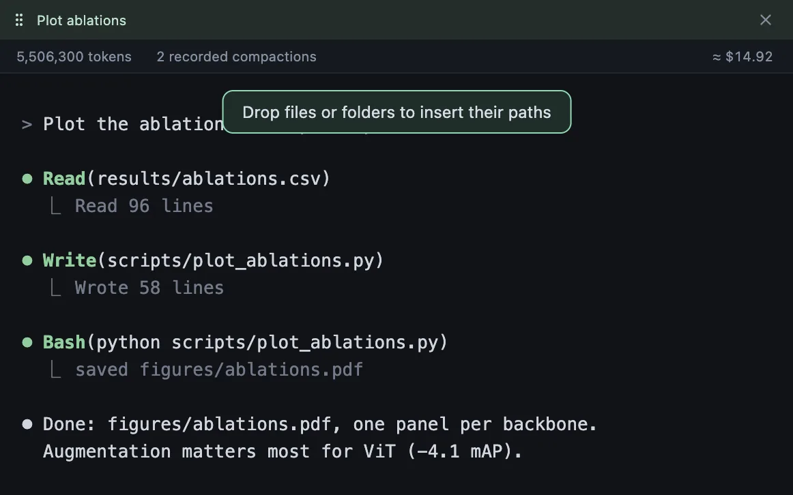
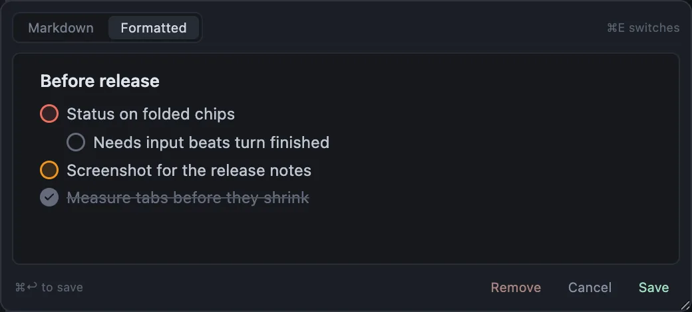
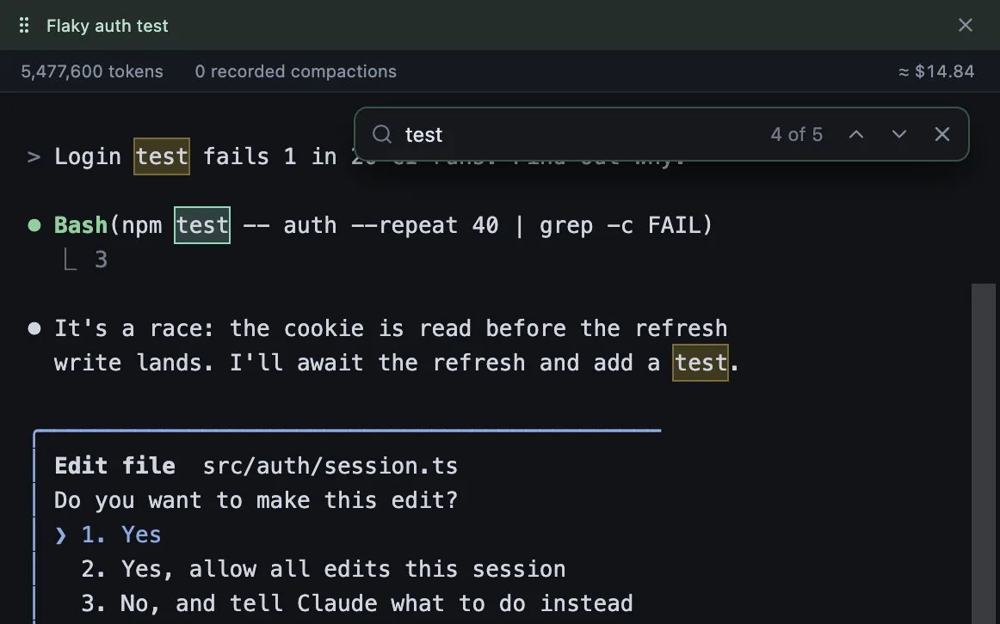
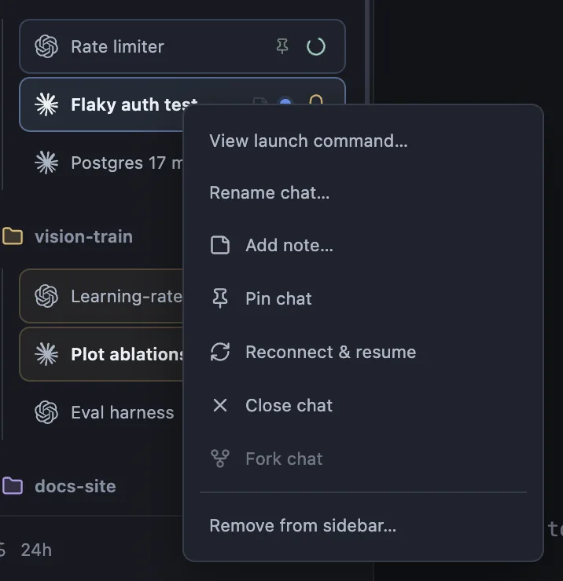

Tired of juggling tmux sessions?
Stop juggling
tmux sessions.
One window for every Codex and Claude Code chat, across every project, on your Mac and your servers. Close the laptop, and they keep going.
$ ssh gpu-boxyour servers$ cd ~/vision-trainanother project$ tmux new -s sweepso it survives closing the lid$ claudeor codex, depending on the job…repeat for every task…$ tmux ls11 sessions. Which one needed you?
After

Hand off the work. Close the laptop.
Your agents keep going. Every chat runs in tmux on its own machine, and Harbor just attaches.
Come back only when you’re needed.
Every chat shows what it’s doing. Notifications and ⌘J take you to the one that needs you.
- Working
- Needs input
- Background job
- Done

Tabs that work like your browser.
Groups, split view and focus mode. Habits you already have, now for your agents.
Every machine, one sidebar.
Projects on your Mac and over SSH, side by side. Hosts come straight from your SSH config.

Everything else you’d want



scp.


Get started
curl -fsSL https://spsharan.com/harbor-app/install.sh | bashbrew install tmuxon your Mac and servers- Sign in to Codex or Claude Code
macOS on Apple Silicon. Servers need tmux 3.2+, Python 3.8+ and key-based SSH. Harbor keeps itself up to date.
The download isn’t notarized by Apple: on first launch, choose Open Anyway in System Settings → Privacy & Security. The command above skips that step.